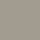

Easy renowacja podłoga 3V3 to doskonały produkt do renowacji podłóg ceramicznych, gresowych, granitowych z kamienia naturalnego oraz podłóg drewnianych lakierowanych. Doskonała przyczepność do gładkich podłoży. Odporna na uderzenia, ścieranie, plamy, zabrudzenia. W przypadku podłóg z drewna dębowego należy stosować podkład, aby zapobiedz pojawieniu się tanin.
Faba Easy renowacja podłogi i schody
Produkt do renowacji podłóg oraz schodów, drewnianych ceramicznych, kamiennych oraz laminowanego.
CENY:
0,75l / 50 zł
2l / 100 zł
Kolory

Biały

Biały pieprz

Tytan

Taupe

Szary marengo

Ciemny grafit
Właściwości i przeznaczenie
Wykończenie: SATYNA
Czas między warstwami: 3H
Wydajność: 9M2
Pojemność: 0,75L, 2L
Czyszczenie narzędzi: WODA
Zastosowanie
Przygotowanie podłoża
Przygotowanie podłoża jest niezbędnym etapem prac. Należy dokładnie umyć i odtłuścić powierzchnię. Elementy tłuste lub łuszczące się mogą zmniejszyć przyczepność farby.
-
Laminaty oraz drewno lakierowane i pomalowane w dobrym stanie:
powierzchnię umyć, spłukać czystą wodą, pozostawić do wyschnięcia. Następnie przeszlifować papierem ściernym (240) i odpylić -
Dąb lub kasztan:
zastosować odpowiedni podkład, aby zapobiec pojawieniu się tanin -
Ceramiczne płytki podłogowe:
umyć, zwracając szczególną uwagę na fugi, spłukać, pozostawić do wyschnięcia. Następnie przeszlifować papierem ściernym (240) i odpylić -
płytki podłogowe pomalowane, w dobrym stanie:
umyć, spłukać dokładnie czysta wodą i pozostawić do wyschnięcia. Następnie przeszlifować papierem ściernym (240) i odpylić -
płytki podłogowe pomalowane, z popękaną, uszkodzoną lub łuszczącą się powierzchnią – całkowicie usunąć zniszczoną powierzchnię:
– mechanicznie: przeszlifować papierem ściernym ( 60 następnie 120 ); odpylić, umyć i pozostawić do wyschnięcia.
– chemicznie: przy pomocy Środka do usuwania starych powłok V33
Aplikacja
Zalecana temperatura malowania: 12°C-25°C. Unikać malowania w przeciągach.
- Otworzyć saszetkę z dodatkowym składnikiem i wlać całą jej zawartość do pojemnika z farbą. Farbę należy dokładnie wymieszać przez 5 minut za pomocą mieszadła do farb sięgając aż do dna pojemnika, w celu uzyskania jednorodnej konsystencji.
- Nasączyć wałek równomiernie farbą, a następnie usunąć jej nadmiar na kratce malarskiej. Nanosić starannie, metodą krzyżową, taką samą ilość farby na podobną powierzchnię, rozpoczynając od krawędzi zewnętrznych pomieszczenia.
Ostatnie pociągnięcie wałkiem wykonywać w jednym kierunku. Nie nakładać drugiej warstwy, jeżeli pierwsza nie jest całkowicie sucha. Pozostawić do wyschnięcia na 3h i nałożyć drugą warstwę w ten sam sposób. Pełne właściwości
i odporność produkt uzyskuje po nałożeniu drugiej warstwy. W przypadku niektórych kolorów lub kontrastującego podłoża może być konieczne nałożenie dodatkowej warstwy farby.
Tak przygotowana farba powinna być zużyta w ciągu 10 dni. Po tym czasie właściwości i przyczepność farby ulegają zmianie.